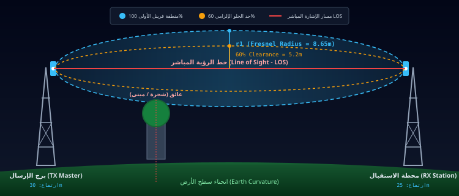

مسار تدفق الحزم المباشر: المقر الرئيسي ← الأبراج ← الفروع ← المستودع ← العاملون عن بعد
● تدفق حي لحظي للبيانات (Live Stream)
المرحلة 1
🏛️
المقر الرئيسي
راوتر CCR2004 وسيرفرات الـ ERP وسويتش CRS328
10 Gbps SFP+ Trunk
←
10G Fiber
المرحلة 2
🗼
أبراج البث والربط
Rocket Prism 5AC + Sector 120° وصحون الـ PtP
5GHz PtP/PtMP 500M
←
5.8 GHz airMAX
المرحلة 3
🏢
فروع الشركة
محطات NanoStation 5AC وسويتشات PoE والمكاتب
VLAN 30/40 150M
←
PtP 15km
المرحلة 4
🏭
المستودع والمصنع
صحون PowerBeam ولواقط Netis الصناعية وكاميرات NVR
VLAN 50 CCTV 200M
←
WireGuard
المرحلة 5
🔒
العاملون عن بعد
أنفاق VPN المشفرة للموظفين الميدانيين والمندوبين
ChaCha20 Encrypted
🎛️ لوحة التحكم والمحاكاة المباشرة
48 جهاز نشط
المنظور:
السرعة:
تصفح الويب (Web Data 10G)
مكالمات الـ VoIP (أولوية قصوى QoS)
بث كاميرات المراقبة (CCTV Stream)
أنفاق WireGuard VPN المشفرة
رابط الأبراج اللاسلكي 5GHz PtP/PtMP
انقر على أي مرحلة أعلاه أو أي جهاز لتكبير وعرض تفاصيله | اسحب بالماوس لتحريك الخريطة | بكرة الماوس للتكبير
PHYSICAL LAYER ENGINEERING HUB
19 جهاز معتمد • معايير كابلات T568B • كابلات STP وفايبر
مركز هندسة العتاد والكابلات الفيزيائية (Hardware & Cabling Hub)
كتالوج الأجهزة التفاعلي، مخططات ألوان كابلات الـ RJ45، تشريح طبقات كابلات الأبراج، وهندسة الألياف الضوئية
محاكيات واجهات التشغيل الأصلية (Live Device Simulators)
تحكم حقيقي وتفاعل مباشر مع واجهات MikroTik RouterOS v7 و Ubiquiti airOS 8
🧮
حاسبة تقسيم الشبكات والـ Subnetting
حساب تفصيلي لسعة العناوين، أقنعة الشبكة، وعناوين البث وتجزئة الـ VLANs
أمثلة شائعة:
اضغط على زر الحساب لعرض النتائج وجدول الـ VLANs المقترح...
📡
حاسبة منطقة فرينل وميزانية الرابط اللاسلكي
حساب فقدان المسار الحر (FSPL)، إشارة الاستقبال المتوقعة (RSSI)، وهامش الخلو 60%
روابط جاهزة:
اضغط على زر الحساب لعرض إشارة الاستقبال وتقييم الرابط...

مولد أوامر ميكروتك الاحترافي (RouterOS Script Generator)
توليد سكربت تهيئة كامل للراوترات المركزية يتضمن الـ VLANs وجدار الحماية وخوارزمية PCQ
معلمات النظام والمزود والشبكة
نماذج سريعة:
الميزات المؤسسية المضمنة تلقائياً في السكربت:
✔ تفعيل Hardware VLAN Filtering وعزل 7 شبكات
✔ خوارزمية PCQ للتوزيع العادل ومنع احتكار الباندويث
✔ حماية Brute-force وحظر الآي بي المهاجم لمدة 24 ساعة
✔ تسريع FastTrack لتقليل استهلاك المعالج بنسبة 70%
enterprise_mikrotik_setup.rsc
# اضغط على زر "توليد كود RouterOS v7 الفوري" لتوليد الأوامر هنا...